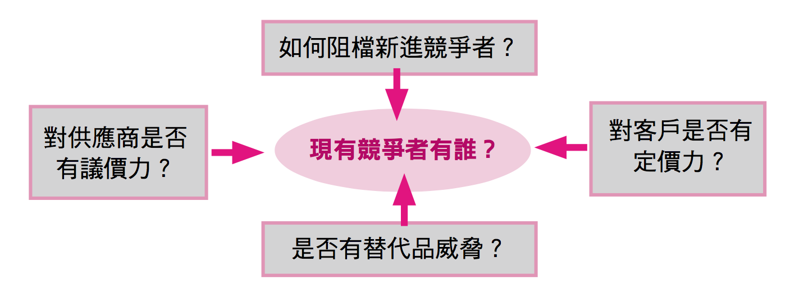

滿足一窺投資高手選股及分析流程的渴望
如果第一本：『雷浩斯教你小薪水存好股又賺波段』是直接告訴我們答案的選股用工具書，那麼我會說第二本『雷浩斯教你六步驟存好股：這樣做就能獲利翻倍！』就是算式過程及邏輯應用的解析書！
我們都知道考試直接背誦答案只是一時的，惟有真實瞭解整個算式過程及邏輯的推演，這個『答案』才會真正屬於自己的；更何況在面對如同John Walker 醉漢走路的詭譎多變市場，只知道一個答案，絕對是不夠的。而想要有足夠的答案來回答「市場先生」的“提問”，這本『雷浩斯教你六步驟存好股：這樣做就能獲利翻倍！』絕對是最佳的選擇。
『雷浩斯教你六步驟存好股：這樣做就能獲利翻倍！』把整個價值投值的選股架構更完整的呈現，不僅能讓初入價值投資的朋友，能更迅速的認識何謂基本面價值投資，也能讓已有基礎的朋友更增強自己的投資技能，及滿足一窺投資高手選股及分析流程的渴望。
初入價值投資者，一般分類公司的好壞，最簡易的方法無非用『好公司、一般公司、差公司』這三個概念去將公司分門別類，而為了能讓我們更明確的區分公司的好壞，書中更精簡了《股市真規則》裡『獲利能力矩陣』的概念，使用了“ROE＋自由現金流”這個標準，打造了“獲利能力矩陣象限圖”，讓我們能更精準的將公司以指標的優劣，將其區分位於哪一個象限的等級，使我們的資金能更有效率的投資，以減少機會成本的浪費。
完整的價值投資者＝量化分析＋質化分析，量化分析若為財報數據的分析，那麼質化分析就是尋找這些財報數據的來源。
本書也教導我們如何進行一般價值投資者最弱的”質化分析”：
一、最一般的方法從網路收集資料外，證交所的法說會影音檔（http://webpro.twse.com.tw/webportal/schedule/）也是不錯的資訊來源，另外年報的閱讀「七大重點」也有逐一說明：
重點1、產品佔營收比例
重點2、外銷內銷比例
重點3、產能、產量、產值
重點4、主要供應商和進貨客戶
重點5、部門損益
重點6、產業資訊
重點7、大股東持股
二、使用麥克波持(Michael Porter)的「五力分析」模型，來分析某一產業的前景，或者分析一間公司，在其所屬產業裡的角色地位及其競爭強度：
「五力分析」模型：
1、現有競爭者有誰？
2、對客戶是否有定價力？
3、是否有替代品威脅？
4、對供應商是否有議價力？
5、如何阻擋新進競爭者？

三、分析該公司的投資護城河，而KSF(關鍵成功因子)就是該護城河的廣度及深度：
書中的二段話，即可說明「投資護城河」及「關鍵成功因子」的精髓，內容是這麼說的，『所謂的護城河，就是別人知道你成功的秘密，但是卻無法模仿。護城河在一定程度上，是需要時間累積的，因此具有不可逆轉的價值。』、『KSF一定是其他公司做不到的因子，如果其他公司能做到，那就叫做“關鍵存活因子”，也就是必備門檻，而不是“關鍵成功因子”。』
會買股票的是徒弟，會賣股票的才是師父。 市場上很多存股者，著重的在於可否從公司取得現金流(股息)，而若以“絕對報酬”為目標的投資者，其實可以透過書中所教導的估價法，來買賣股票，進一步也可以區分為二種交易策略：
1、波段操作策略：積極型價值投資法，獲利來自於本益比的變化。
2、長期持有策略：獲利來自於內在價值的成長。
最後一章，第五章，看似與投資沒有相關性，卻是投資高手默默在做的事。 本質上為一個工具概念的GTD(Getting Things Done)，書中也無私的分享，將此概念修改成價值投資專用的系統－雷式投資GTD，分為五個階段：
1、第一階段：打造投資工作籃
2、第二階段：這是什麼？判讀能力範圍！
3、第三階段：下一步行動，要分析嗎？
4、第四階段：尋找資料，他人支援
5、第五階段：開始分析，自行研究
接下來個人的目標，分析個股能力能持續增強，能配合著雷式投資GTD，並一步步打造完美投資工作流程，內化為專屬自己的思維模型。